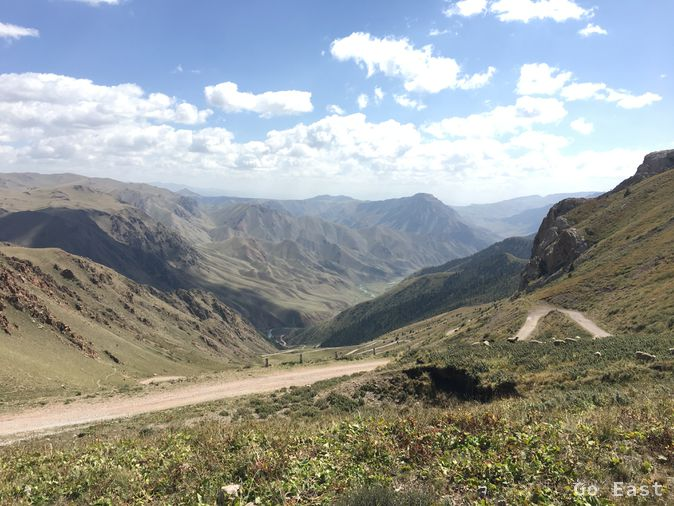
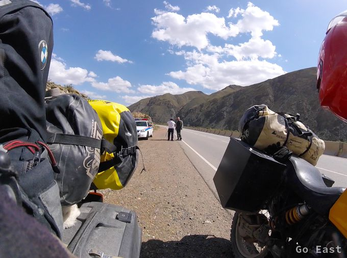
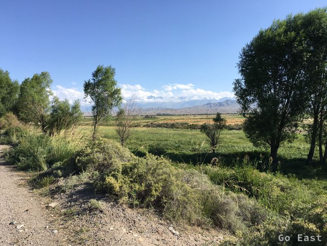

Die Nacht ist kalt und und nach meiner Exkursion zum Outhouse um 5:30 krieche ich mit Kopf und Kragen in den Schlafsack. Der Ofen ist aus und Dank gutem Schlafsack schlafe ich wieder ein bis 7:00. Herrliches Wetter jetzt mit blauem Himmel und Sonnenschein und kein Wind. Kein Flugzeug, kein Verkehrslärm, ab und zu ein Bellen, die Pferde weiden still. In der Restaurant-Jurte gibt es dampfendes Wasser für Nescafe und Tee, frischen Pfannkuchen mit Marmelade, den Seykal, die junge Managerin mit ihrem Team schon seit 5:30 für alle Gäste vorbereitet hat.

Martin und Andre fahren los und wir machen aus, dass sobald Netz vorhanden, wir einen Treffpunkt für abends per WhatsApp vereinbaren wollen. Wir packen schon mal eine Fleecejacke unter die Motorradjacke und kurze Zeit später fahren wir auch los und nehmen die südliche Piste vom See weg, um nach ca. 70km dann auf die geteerte Straße zu stoßen. Für die 70km Piste brauchen wir ca. 3 Std und werden mit grandioser Landschaft belohnt. Es geht über 3.000m hohe Pässe. Entlang der Piste sehen wir verstreut zahlreiche Jurten von Hirtenfamilien deren jüngsten Sprösslinge (ca. 10-jährige) schon zu Pferde die Hänge auf und ab galoppieren und die Rinder- und Pferdeherden beaufsichtigen. Sogar ein richtiges Kamel (mit 2 Höckern) bekomme ich zu Gesicht. Die Piste ist einfach zu fahren, wenn man es geruhsam angeht. Auch die steilen Passagen sind gut zu schaffen. Allerdings wollte ich die Strecke nicht bei Regen fahren, da könnte man sich schnell einige hundert Meter tiefer wieder finden.

An den geteerten Straße angekommen, sind wir überrascht mit welcher super Qualität, die Straße gebaut wurde. Kein Wunder, es ist die Straße zur Hauptstadt Bishkek. Und es kommt wie es kommen musste, natürlich lauert hinter einer Kurve eine Radarpistole auf uns, die ihren Tribut einfordert. Ca. 15,- USD werden fällig. Noch einmal gut gegangen, dieses Mal gibt es leider keinen Touristen- oder Seniorenrabatt.
Audi, Mercedes-Sprinter, Mercedes-PKW beherrschen hier das Straßenbild.

Wir erhalten eine WhatApp, wo wir uns mit Martin und Andre treffen und starten die letzten 100km durch auf nunmehr welliger und löchriger Fahrbahn. Vorbei an einem fast ausgetrocknetem Wasserreservoir und abwechslungsreicher Landschaft, bis wir den Issyk Kul See sehen. Im Süden sehen wir die schneebedeckten Gipfel der Tian Shan Gebirgskette, die sogar die Wolken durchbrechen.

Das Gästehaus ist nett, auch wenn es leider über kein WiFi verfügt. Das gestrige Unwetter hat das WiFi lahmgelegt. Die Spuren der heftigen Regenfälle sind auf den Straßen noch zu sehen. Wenigstens haben wir mit den SIM-Karten Mobilempfang so dass wir Verbindung mit der Außenwelt aufnehmen können. Wir gehen gemeinsam Abendessen und machen einen langen Spaziergang zum nächsten Restaurant mit WiFi. Nachdem wir zurückgekehrt sind, sind noch neue Gäste aus Frankreich mit dem Landrover angekommen.